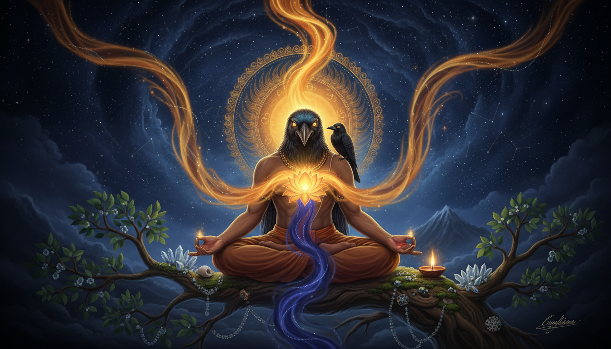

Most remedies begin with something outside you: a mantra to repeat, a planet to propitiate, a gemstone to wear, a temple to visit. Kakabhushundi's less-known method begins with something already inside you—the movement of the breath.

In the Yoga Vasistha, Kakabhushundi appears as Bhusunda, an immortal crow-sage who has watched worlds begin and end. When the great sage Vasistha asks how he has survived, Bhusunda does not offer a treasure map to heaven. He points to the meeting of prāṇa and apāna: the upward and downward currents of life that meet in the heart-lotus. He says that regular practice of prāṇāyāma gave him both longevity and self-knowledge.
That is the achievement worth recovering: not supernatural survival as a spectator, but fearlessness created by changing the relationship between attention and the body.
The method contains a rare occult correspondence. In Bhusunda's own system, prāṇa rises from the heart and travels twelve fingerbreadths beyond the body; apāna begins twelve fingerbreadths away and returns to the heart. The pause between one current ending and the other is kumbhaka—the still point of the vessel. Bhusunda calls effortless suspension of breath the supreme state.
The safe, modern application is not forced breath-holding. It is the deliberate observation of natural pauses: inhale, exhale, and the spontaneous stillness that occasionally appears between them. That distinction matters. The tradition points toward awareness; it should never be used to override the body's warning signals.
A Note Before You Begin
This practice comes from a contemplative and yogic tradition, not from clinical medicine. Prāṇāyāma, mantra and ritual can support attention and self-observation, but they do not diagnose or treat illness. If you are pregnant, have a respiratory or heart condition, a history of panic, dizziness or fainting, or are currently in crisis, consult a qualified clinician or teacher before beginning any breath practice.
Do not force, strain or prolong a breath-hold. This article intentionally uses observation, not hyperventilation or retention. Stop if you feel light-headed, uncomfortable, breathless, tingling, agitated or unwell. Respiration is never something to conquer. If the practice increases distress, return to ordinary breathing and seek qualified guidance.
Astrological references below are traditional timing frameworks, not causal predictions. A difficult Saturn or Rahu–Ketu period may be used as a prompt for disciplined attention; it is not proof that a planet caused a symptom, and astrology is not a substitute for health care.
The Crow Who Remembered the Worlds
Kakabhushundi appears in two very different but complementary stories.
In the Rāmacaritamāṇaṣ, he is a devotee of Shiva who becomes a crow and narrates the Rāmāyaṇa to Garuḍa. The story is unusually severe. Because Kakabhushundi refuses to show respect to his teacher while praying to Shiva, Shiva curses him to live as a snake through a thousand births. The guru pleads for mercy, and the curse is softened: after those lives, Kakabhushundi will be born as a Brahmin and become a devotee of Rāma. A later quarrel with the sage Lomasha causes the crow form. As child-Rāma plays, the sage briefly doubts Rāma's divinity, flies through the heavens and even to Brahmaloka—but Rāma's fingers remain within reach. Rāma then reveals a cosmos of multiplied worlds within his mouth. Overwhelmed, Kakabhushundi asks for salvation and chooses to remain the crow, the form in which Rāma's grace found him.
Read this story as a practitioner rather than a collector of curiosities and its sequence is exact:
- Disregard for the teacher creates the lowest form of life.
- A long cycle of consequence cannot be escaped.
- The supreme teacher appears in an unexpected form.
- A momentary doubt is corrected by direct vision.
- The curse is not merely removed; the liberated being keeps the form through which grace came.
The second story, found in Book VI of the Yoga Vāsiṣṭha, explains the method behind that liberation. Bhusunda is the crow associated with the goddess Alambushā. After a divine celebration involving swans, he is born in a form associated with the wish-fulfilling tree on Mount Meru. He sits on its branch, unmoved through cosmic flood, fire and destruction.
Vasistha visits him and asks how his body has avoided death. Bhusunda replies that death does not wish to kill one who is free of attraction and aversion, false notions, greed, anxiety, anger and lust. He does not call the practice a cure for every illness. He calls it a removal of the conditions that make fear and agitation continuously feed themselves.
The Achievement in One Line
Bhusunda achieved fearlessness by becoming the witness of the breath, and longevity by no longer identifying with the body's alarms.
That is more useful than a dramatic claim of victory over death. Fear often persists because the mind treats every sensation as an emergency: a tight chest means danger, a racing thought means something is wrong, a future event has already become a present disaster. Bhusunda's practice does not argue with the alarm. It watches the movement beneath it until the alarm loses its authority over attention.
The Hidden Map: Why Twelve Fingerbreadths?
The Yoga Vāsiṣṭha gives unusually specific inner imagery.
- The body is described through subtle channels, nāḍīs, with ida and pingala at the centre.
- Prāṇa rises from the heart-lotus like a flame. Its outward movement ends twelve fingerbreadths beyond the body.
- Apāna begins at that outer limit, the dvādaśanta, and moves inward and downward toward the heart, like water.
- Prāṇa is compared with the Sun or fire and supports the body's inner warmth and activity.
- Apāna is compared with the Moon and protects the body from what is outside.
- When prāṇa ceases and apāna has not yet begun, there is external kumbhaka. When apāna has ceased and prāṇa is only beginning, there is internal kumbhaka.
- The effortless interval is not a held container of air. It is the still point where the two currents no longer pull in opposite directions.
This is why the number twelve matters in Bhusunda's account. It is not an arbitrary count of breaths. It describes a field—an inner and outer radius around the body—in which the descending and ascending currents can meet.
Bhusunda says that by keenly observing the place and moment at which prāṇa is consumed by apāṇa, and the moment at which apāṇa is consumed by prāṇa, sorrow ends. He then makes the crucial distinction:
The state is valuable because it is effortless. One should not manufacture strain and then call it mastery.
Modern practitioners often reach for forceful retention because it feels like achievement. Bhusunda's teaching points the other way: the sign of progress is less agitation, clearer attention and steadier action—not a longer contest with the breath.
The Ritual: Twelve Rounds of the Unforced Breath
This is a safe, contemporary adaptation of Bhusunda's teaching. It is a ritual in the broad sense: a repeatable sequence of posture, intention, attention and reflection.
1. Choose a Fixed Field
Sit in the same place at the same time each day. Dawn or the quiet period before sleep is traditionally suitable, but consistency matters more than a fashionable hour. Use a firm seat, a quiet room and a clear visual point slightly below eye level. Keep the spine comfortably upright, shoulders soft, jaw relaxed and hands resting without gripping.
For the first seven days, do nothing requiring concentration. Simply arrive, notice that you are here, and listen to the whole breath without changing it.
2. Set the Intention
Silently say:
I am here. I notice without obeying. I release what is not mine to control.
If mantra belongs in your tradition, "Om" or "Rāma" can be used—but do not turn the mantra into pressure. Bhusunda's central instruction is observation, not verbal performance.
3. Establish the Baseline
Breathe naturally for five minutes. Notice:
- where you feel the movement of air;
- whether the exhale is smooth, uneven or blocked;
- whether thought follows the breath;
- where anxiety gathers in the body.
Do not correct anything. The baseline is information, not a failure.
4. Trace One Complete Cycle
Observe one inhale from beginning to end, one exhale from beginning to end, and the spontaneous pause that may appear between them. Then begin again.
The points to track are simple:
- Inhale: does attention ride the incoming breath all the way to its natural end?
- Pause: is there a still moment before the exhale begins?
- Exhale: does attention follow the outgoing breath to its natural end?
- Pause: is there stillness before the next inhale?
The pauses are the heart of the ritual. Do not lengthen them. Notice whether they are truly effortless; if you strain to create one, the pause has ceased to be the object of observation.
5. Complete Twelve Unforced Rounds
A round is one natural inhale–exhale cycle with both pauses noticed. Complete twelve rounds.
Why twelve? It echoes the text's twelve-finger field without pretending that a modern counting convention is identical to an ancient instruction. Twelve also provides a compact field of attention: the mind stays with a modest, countable cycle rather than chasing a grand experience.
If a natural pause occurs, rest in it without filling it with sound or effort. If no pause occurs, that is equally valid. The ritual is completed by twelve attentive cycles, not by a manufactured retention.
6. Release the Field
After the twelfth round, let breathing return to its normal pattern. Rest with the eyes closed or open. Notice whether there is any need to evaluate what happened. Do not force a special state.
Then record four lines in a journal:
- What did the breath feel like at the beginning?
- What did the mind do when it encountered the pauses?
- What sensation or emotion was strongest?
- What changed by the end of the twelfth round?
This makes the practice diagnostic. It helps you distinguish awareness from suppression, and calm from numbing.
7. Close Without Seeking a Reward
Bhusunda says that the practitioner does not think, "I have obtained this and I shall gain that too." Close by releasing the result. The practice is complete because you completed it, not because you felt a revelation.
The Occult Correspondences
The practice contains symbolic layers that can be worked consciously without turning them into claims of hidden power.
The Crow: Unflinching Witness
The crow is not merely comic. It watches, moves between worlds and can enter what others cannot see. In the practice, the crow is the witnessing position: close enough to see fear, not obliged to obey it.
Place the word witness beside the breath. When the chest tightens, you are not saying "I am in danger" automatically. You are noticing, "tightening is present." The small interval between the sensation and the conclusion is Bhusunda's freedom.
The Two Birds: Apāna and Prāṇa
Apāna and prāṇa are not two separate selves. They are two modes of one vitality. Watching them as one rhythm restores the sense that inner and outer life are not at war. It is a subtle antidote to the split-state that anxiety creates: a body that feels dangerous and a mind that argues with it.
The Wish-Fulfilling Tree: Stability Under Pressure
Bhusunda's tree remains even while flood, heat and cosmic dissolution pass. During the ritual, visualize—not as magical force, but as a steadying image—a great tree rooted deeply and standing in an open sky. The root is the steady body. The trunk is the breath. The branches are thoughts moving without pulling the whole tree away.
The Twelve-Finger Field: A Halo of Attention
The text locates the meeting point twelve fingerbreadths from the body. Imagine attention held not as a tight spotlight but as a broad, quiet field around you. It is the psychological counterpart of the text's field of prāṇa and apāna. The instruction is the same: do not block the world; hold the field.
Rāma and Śiva: Two Poles of Grace
Bhusunda carries both the Rāma cycle and the Śiva-centered yogic tradition. Rāma opens the possibility of divine vision beyond ordinary forms. Śiva represents the still, detached consciousness that remains when the forms change. Together they make an excellent pair for the closing phase: the active world and the witness that does not lose itself within it.
Using the Practice in a Remedial Astrology Calendar
The following is a modern alignment framework, not a remedy prescribed by Kakabhushundi in his own texts. It connects Bhusunda's practice to traditional Jyotiṣa timing without pretending the two systems were historically joined.
When Saturn Is the Dominant Test
Classical Saturn is associated with delay, endurance, discipline, fear of failure and the consequences of shortcuts. When a chart or transiting period is experienced as Saturn-heavy, the useful question is not "How do I force a result?" but "What structure can I keep when results are slow?"
Run the twelve rounds at the same hour for at least nine days. Add one Saturn-appropriate act of discipline: finish a delayed task, repair something neglected, serve a senior person, or sit with a difficult duty you have been avoiding. The breath practice teaches non-reaction; the Saturn act teaches responsible engagement. One without the other is incomplete.
During Rahu–Ketu Axis Periods
Rahu and Ketu are commonly associated with disturbance, illusion, obsessive longing, abrupt change and the pull of unfamiliar desire. They are not medical categories, but the traditional image is useful: one current expands while another is unseen.
Use the ritual to witness expansion without following it. On each inhale, note the impulse to grasp, hurry or identify; on each exhale, note the impulse to reject, collapse or withdraw. Do not suppress either. The pause is where the two currents can be seen rather than obeyed.
If anxiety is intense, keep the practice to natural breathing and observation. Do not add retention.
During Eclipses and Moon Phases
Bhusunda explicitly compares prāṇa to the Sun and apāna to the Moon. The eclipse is therefore a fitting symbolic window to practise seeing the inner Sun and Moon meet. On eclipse days and at new moon, the twelve rounds can be offered as a quiet alignment ritual:
- begin by looking toward the relevant luminarium;
- dedicate the first six rounds to the rising, luminous current;
- dedicate the last six to the descending, cooling current;
- rest at their imagined meeting point without forcing a pause.
This is contemplation, not astronomy. No eclipse is required for the practice to be valid.
When a Chart Points to Fear, Sleep Trouble or Mental Overwhelm
Traditional astrology may indicate this symbolically, but persistent insomnia, panic or intrusive fear require competent care. Use Bhusunda's method only as a gentle supplementary practice: same place, natural breathing, twelve rounds, no retention, journal once, then stop. If symptoms continue or worsen, seek a qualified professional.
A Ten-Step Working Protocol
- Arrive at a fixed time and place. Repetition creates the protected field.
- Sit upright without rigidity. The body needs to be alert, not braced.
- State one intention: presence without obedience.
- Spend five minutes on ordinary breathing. Do not modify it.
- Observe one full cycle. Inhale, pause, exhale, pause.
- Complete twelve natural cycles. Let the pauses be found, not manufactured.
- Stop if strain appears. Comfortable attention is the criterion.
- Journal four lines. Notice changes without making a verdict.
- Perform one concrete act of discipline or care. Bhusunda's calm must enter life.
- Close without bargaining. Return to the next ordinary task.
What Kakabhushundi Means for Your Chart Specifically
- A long Saturn transit or delayed recognition — use the fixed schedule as the remedy's core. Bhusunda's immortality is not untouched time; it is time no longer spent in agitation.
- Rahu–Ketu confusion about what is truly desirable — track the rise and fall of impulse without obeying either. The practice strengthens the capacity to wait.
- A Sun or Moon placed under pressure — work with the text's solar–lunar symbolism at dawn or dusk, but keep it contemplative.
- Repeated panic or sleep disturbance — do not intensify the breath practice. Natural observation only, and professional support where needed.
- A chart crowded with fear-driven commitments — the twelve-round ritual is a boundary exercise. It makes one small field in which no command is obeyed automatically.
- Interest in serious yoga or the Yoga Vāsiṣṭha tradition — study Book VI's Bhusunda story in a reliable translation. The value is in its precision, not in treating the text as a decorative occult mood.
The Final Word
Kakabhushundi's achievement was not that a crow escaped death, impressive as that image is. It was that he found a place inside ordinary breathing where fear could no longer choose his attention.
The method is almost disarmingly simple: one natural inhale, one natural exhale, and the still point between them. No gemstone. No expensive ceremony. No claim that a planet has been bribed. Twelve attentive cycles, repeated without bargaining, become a boundary around the mind. Repetition teaches the nervous system what Bhusunda's text describes in metaphysical language—the Sun and Moon can meet without destroying each other.
That is why the ritual belongs in a remedial astrology blog even though Bhusunda never wrote a horoscope. A chart can describe the pressure a person feels, but the person still has to practice something. Kakabhushundi's gift is a practice small enough to begin before the chart improves: sit, breathe naturally, find the unforced pause, and return—twelve times.
—
Sources
3. Vasistha's Yoga, Swami Venkatesananda, SUNY Press, 1993 — Book VI, Nirvāṇa Prakarana, “The Story of Bhusunda,” VI.1:14–28 (Internet Archive)
4. The Yoga-Vasistha, Vihari-Lala Mitra, 1891 — Book VI, “The Story of Bhusunda” (Internet Archive)